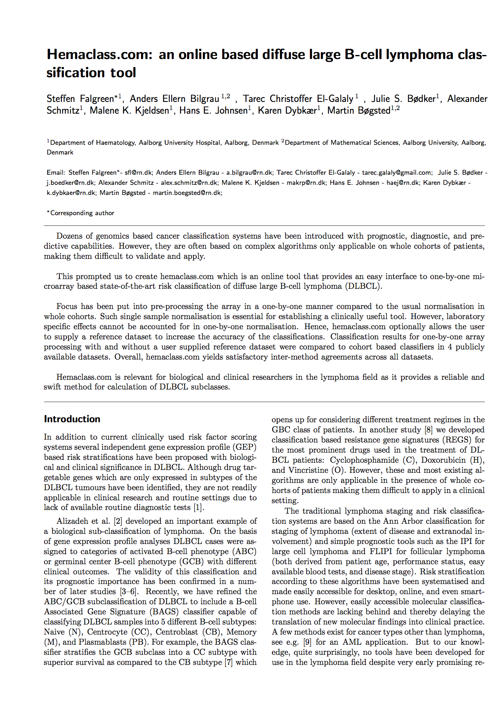

<div class="container">
  <div class="content">
    <h1>Main papers</h1>
   
    <h2>hemaClass</h2>
    
    <table width="978" border="0">
      <tr>
        <td width="146"><a href="http://www.blodet.dk" target="new"></a></a>
        </td>
        
        <td width="823" valign="top">
        <em><h4>Hemaclass.com: an online based diffuse large B-cell lymphoma classification tool</h4></em>

        <p>Steffen Falgreen, Anders Ellern Bilgrau, Tarec Christoffer El-Galaly, Maria Bach Laursen, Julie S.  Bødker, Alexander Schmitz, Malene K. Kjeldsen, Hans E. Johnsen, Karen Dybkær, and Martin Bøgsted</p></td>
      </tr>
    </table>


<h2>B-cell associated signatures</h2>
    
    <table width="978" border="0">
      <tr>
        <td width="145"><a href="http://www.blodet.dk" target="new"></a></a>
        </td>
        
        <td width="823" valign="top">
        <em><h4>A diffuse large B-cell lymphoma classification system that associates normal B-cell subset phenotypes with prognosis</h4></em>
<p>*Karen Dybkær, *Martin Bøgsted, Steffen Falgreen, Julie S. Bødker1, Malene K. Kjeldsen, Alexander Schmitz, Anders E. Bilgrau, Zijun Y. Xu-Monette, Ling Li, Kim S. Bergkvist, Maria B. Laursen, Maria Rodrigo-Domingo, Sara C. Marques, Sophie B. Rasmussen, Mette Nyegaard, Michael Gaihede, Michael B. Møller, Richard J. Samworth, Rajen D. Shah, Preben Johansen, Tarec C. El-Galaly, Ken H. Young, and Hans E. Johnsen *Shared first authorship<br /><br />
Accepted for publication in Journal of Clinical Oncology

</p>
        </td>
      </tr>
    </table>

  


  
  </div>
  <!-- end .container --></div>
  
</body>
